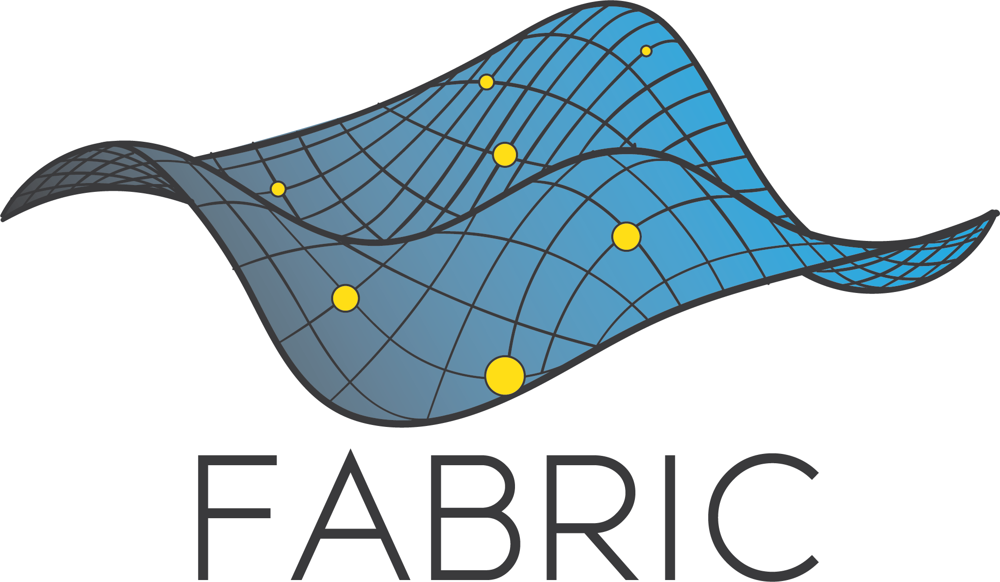
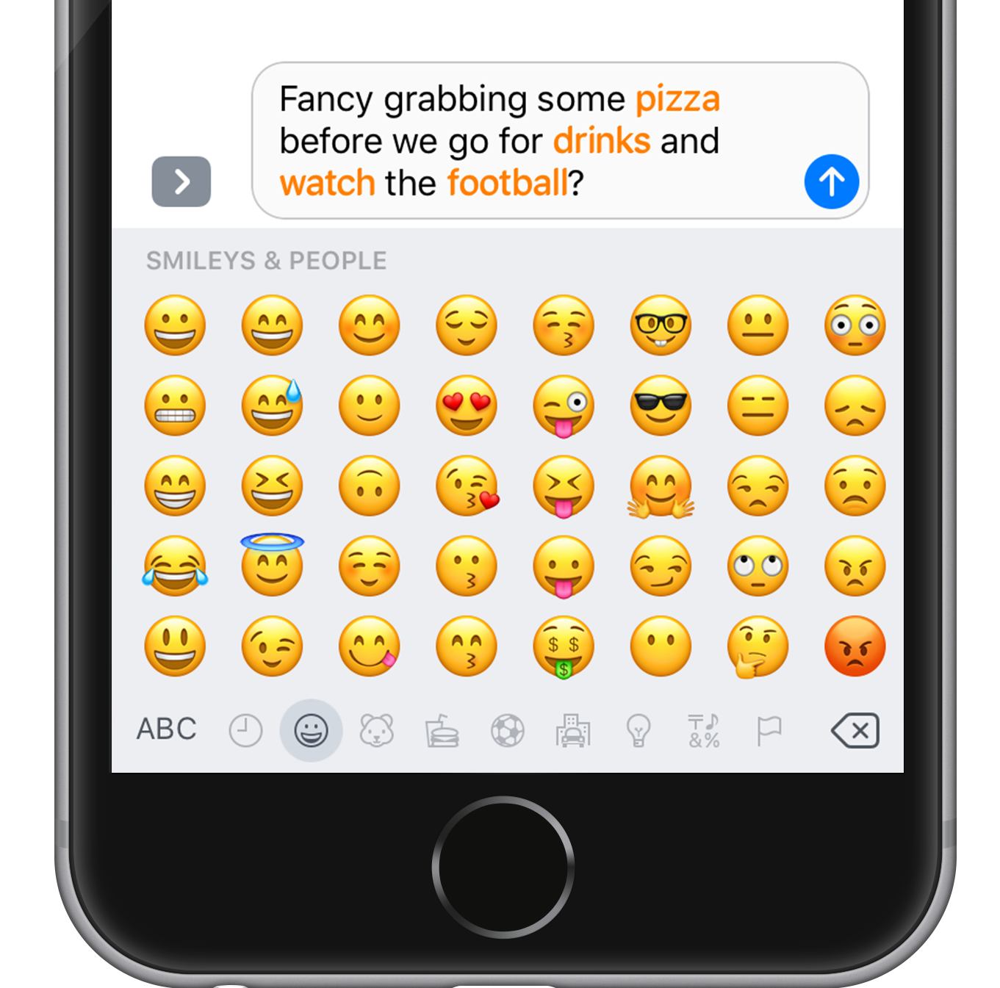
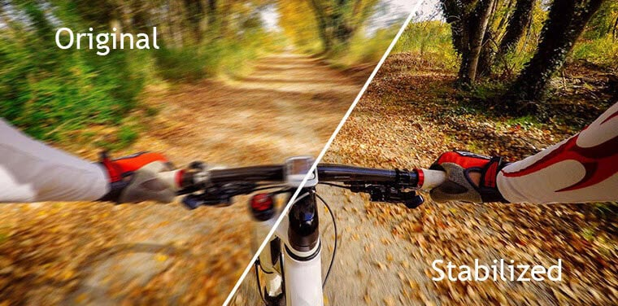
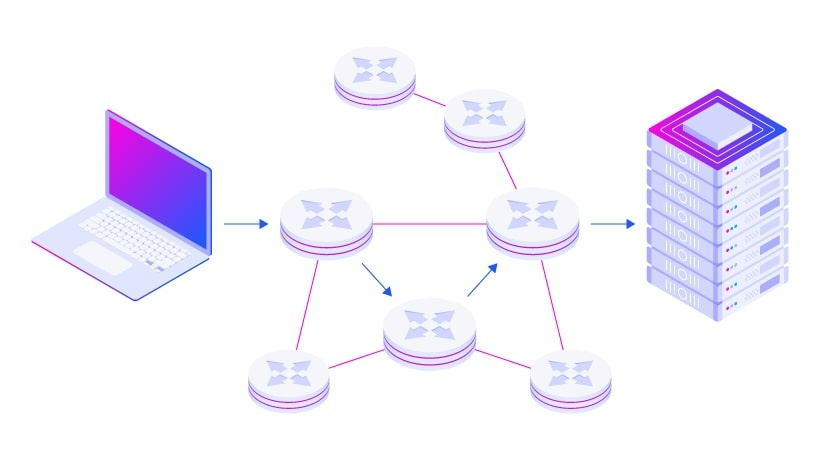

SentiStream:
Sentiment Analysis on Fabric Testbed
In this research project we present the development and evaluation of a real-time sentiment analysis system integrated into the FABRIC testbed.
The main goal is to provide business owners with rapid insights by processing live data streams. A machine learning model is trained to classify tweets sentiment and is integrated into the testbed using a custom packet format. The system is evaluated in two phases – first on a simple bus topology then on a more complex topology.
Accuracy evaluation shows the model achieves 80-82% precision and recall.
The results we obtained indicate that the complex topology approach yields significantly faster processing times despite having a more complicated structure. Specifically, it's mentioned to be almost 12 times faster than the traditional approach.

Web and Mobile Application for Emoji recommendations based on facial emotions
interdum dolor

Recognizing the challenge of selecting from over 3,664 emojis, I developed a mobile application that uses facial expression capture to suggest relevant emojis in real-time. This emoji suggestion app addresses the common issue of effectively expressing emotions over text messages by matching real-time facial expressions to appropriate emojis, significantly improving user experience. By leveraging facial expressions to recommend emojis, my application innovatively employs a Ensemble model for a user-centric, real-time solution to emoji selection.
Video Stabilization With Gaussian and Kalman Filter

In this project, I successfully implemented a video processing block using the Kalman filter and the Gaussian filter.
We were able to achieve satisfactory results with videos with small jittery, and large quick motions.
The final output video had nearly 10% better SSIM measure than the original video.
Approximation Solution For Packet Routing Problem

This paper discusses the project that gives an
efficient approximation algorithm for routing data packets
through a communication network while optimizing for
latency, bandwidth, utilization, and deadline feasibility.
Results on sample networks
show that the algorithm is a 2-approximation algorithm.
This is a Project in which I build a software pipeline for tracking road lanes using computer vision techniques.
The pipeline I use for this project is as follow:
Input frame -> Greyscale -> Gaussian Blur -> Canny Edge Detection -> Image Segment -> Hough Transform -> Output frame
Spark Streaming for Machine Learning

In this project I streamed a twitter dataset csv to localhost, from where I read the stream data using a socket created by Spark context. The stream data is received in the form of Resilient Distributed Datasets on which we perform pre-processing batchwise. Then I ran that pre-processes RDDs into 3 models: Binomial Naive Baayes, Multinomial Naive Bayes, Stochastic Gradient Descent Classifier for classification, on which I performed incremental learning. This gave models which classified sentiment for those tweets with 96% accuracy.
Spotify top 10 songs
for every artist

In this project we used a dataset from Kaggle which had a list of all artists in the world. From which we extracted that list of artists and then used the spotify api and took a list of top 10 songs of all of those artists in the US region and made a dataset out of it.